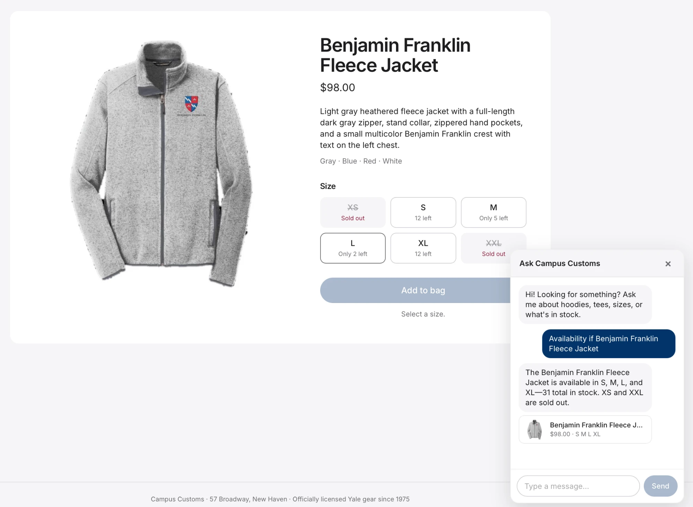
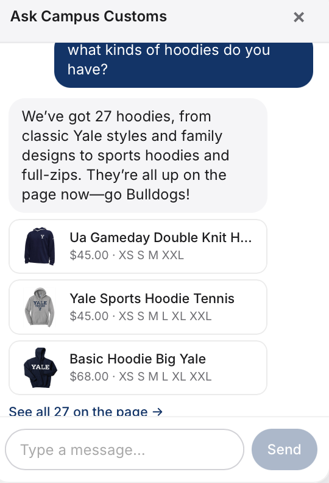
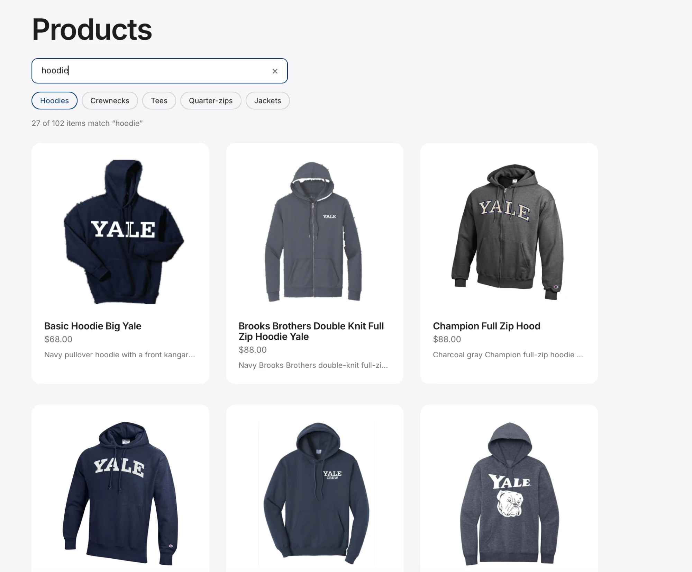

Manual checks on the running site (React front end + FastAPI / PydanticAI agent), with screenshots.
1. Chat checking the inventory level

PASS
Asked about the Benjamin Franklin Fleece Jacket, the agent answered from the live inventory: S, M, L and XL in stock, 31 total, XS and XXL sold out. That matches the database and the size pills on the page, where the sold-out sizes are greyed and struck through.
2. Dynamic search results cards appearing

PASS
"What kinds of hoodies do you have?" made the agent search the catalogue and return all 27 matches as live product cards with photo, price and in-stock sizes, plus a "See all 27 on the page" link. The cards are built from the database, not hardcoded.
3. Usability feature: search bar on Products

PASS
Typing "hoodie" in the Products search bar instantly filtered the catalogue to "27 of 102 items" and highlighted the Hoodies chip. That's the same 27 the chat agent found, so shoppers no longer need to scroll the whole catalogue.